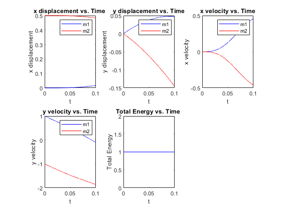

m1 = 1.0;
m2 = 1.0;
k = 1000.0;
c = 0.0;
l = 0.5;
g = 9.81;
x1_i = 0.0;
y1_i = 0.0;
vx1_i = 0.0;
vy1_i = 1.0;
x2_i = 0.5;
y2_i = 0.0;
vx2_i = 0.0;
vy2_i = -1.0;
dt = 1.0e-5;
num_steps = 10000;
time = (0:num_steps-1) * dt;
x1 = zeros(1, num_steps);
y1 = zeros(1, num_steps);
vx1 = zeros(1, num_steps);
vy1 = zeros(1, num_steps);
x2 = zeros(1, num_steps);
y2 = zeros(1, num_steps);
vx2 = zeros(1, num_steps);
vy2 = zeros(1, num_steps);
distance_between_masses = zeros(1, num_steps);
kinetic_energy = zeros(1, num_steps);
spring_pot_energy = zeros(1, num_steps);
grav_pot_energy = zeros(1, num_steps);
total_energy = zeros(1, num_steps);
x1(1) = x1_i;
y1(1) = y1_i;
vx1(1) = vx1_i;
vy1(1) = vy1_i;
x2(1) = x2_i;
y2(1) = y2_i;
vx2(1) = vx2_i;
vy2(1) = vy2_i;
distance_between_masses(1) = sqrt((x2(1) - x1(1))^2 + (y2(1) - y1(1))^2);
kinetic_energy(1) = 0.5*m1*((vx1(1))^2 + (vy1(1))^2) + 0.5*m2*((vx2(1))^2 + (vy2(1))^2);
spring_pot_energy(1) = 0.5*k*((distance_between_masses(1) - l)^2);
grav_pot_energy(1) = m1*g*y1(1) + m2*g*y2(1);
total_energy(1) = kinetic_energy(1) + spring_pot_energy(1) + grav_pot_energy(1);
states = [x1_i; y1_i; vx1_i; vy1_i; x2_i; y2_i; vx2_i; vy2_i];
for i = 1:num_steps-1
k1 = dt * calculate_derivatives(time(i), states, m1, m2, k, c, l, g);
k2 = dt * calculate_derivatives(time(i) + dt/2, states + k1/2, m1, m2, k, c, l, g);
k3 = dt * calculate_derivatives(time(i) + dt/2, states + k2/2, m1, m2, k, c, l, g);
k4 = dt * calculate_derivatives(time(i) + dt, states + k3, m1, m2, k, c, l, g);
states = states + (k1 + 2*k2 + 2*k3 + k4) / 6;
x1(i+1) = states(1);
y1(i+1) = states(2);
vx1(i+1) = states(3);
vy1(i+1) = states(4);
x2(i+1) = states(5);
y2(i+1) = states(6);
vx2(i+1) = states(7);
vy2(i+1) = states(8);
distance_between_masses(i+1) = sqrt((x2(i+1) - x1(i+1))^2 + (y2(i+1) - y1(i+1))^2);
kinetic_energy(i+1) = 0.5*m1*((vx1(i+1))^2 + (vy1(i+1))^2) + 0.5*m2*((vx2(i+1))^2 + (vy2(i+1))^2);
spring_pot_energy(i+1) = 0.5*k*((distance_between_masses(i+1) - l)^2);
grav_pot_energy(i+1) = m1*g*y1(i+1) + m2*g*y2(i+1);
total_energy(i+1) = kinetic_energy(i+1) + spring_pot_energy(i+1) + grav_pot_energy(i+1);
end
for i = 1:num_steps
kinetic_energy(i) = round(kinetic_energy(i), 3);
spring_pot_energy(i) = round(spring_pot_energy(i), 3);
grav_pot_energy(i) = round(grav_pot_energy(i), 3);
total_energy(i) = round(total_energy(i), 3);
end
figure;
subplot(2,3,1);
plot(time, x1, 'b',time,x2,'r');
xlabel('t');
ylabel('x displacement');
legend('m1', 'm2');
title('x displacement vs. Time ');
subplot(2,3,2);
plot(time, y1, 'b',time,y2,'r');
xlabel('t');
ylabel('y displacement');
legend('m1', 'm2');
title('y displacement vs. Time');
subplot(2,3,3);
plot(time, vx1, 'b',time,vx2,'r');
xlabel('t');
ylabel('x velocity');
legend('m1', 'm2');
title('x velocity vs. Time');
subplot(2,3,4);
plot(time, vy1, 'b',time,vy2,'r');
xlabel('t');
ylabel('y velocity');
legend('m1', 'm2');
title('y velocity vs. Time');
subplot(2,3,5);
plot(time, total_energy, 'b');
xlabel('t');
ylabel('Total Energy');
title('Total Energy vs. Time ');
function derivatives = calculate_derivatives(~, states, m1, m2, k, c, l, g)
x1 = states(1);
y1 = states(2);
vx1 = states(3);
vy1 = states(4);
x2 = states(5);
y2 = states(6);
vx2 = states(7);
vy2 = states(8);
distance = sqrt((x2 - x1)^2 + (y2 - y1)^2);
spring_force = k * (distance - l);
damper_force_x = c * (vx2 - vx1);
damper_force_y = c * (vy2 - vy1);
ax1 = (spring_force * (x2 - x1)) / (m1 * distance) + damper_force_x / m1;
ay1 = (spring_force * (y2 - y1)) / (m1 * distance) + damper_force_y / m1 - g;
ax2 = (spring_force * (x1 - x2)) / (m2 * distance) - damper_force_x / m2;
ay2 = (spring_force * (y1 - y2)) / (m2 * distance) - damper_force_y / m2 - g;
derivatives = [vx1; vy1; ax1; ay1; vx2; vy2; ax2; ay2];
end
